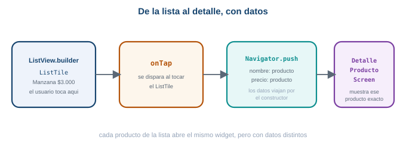
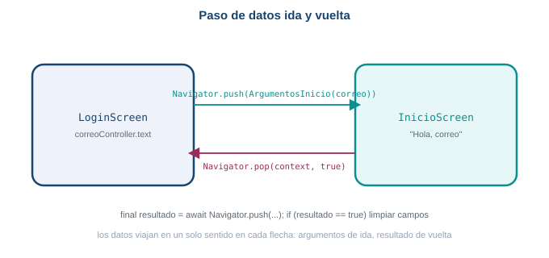

Semana 5. Navegación
| Asignatura | Programación Móvil (IF2004) |
| Grupos | 601 y 602 de Ingeniería Informática |
| Unidad | Unidad 2. Interfaz, datos y persistencia |
1 Lo que vas a lograr
Hasta ahora cada pantalla que armaste vivía sola: Scaffold, widgets, un tema. Esta semana conectas pantallas entre sí. Empiezas con una app nueva y simple, MiniMarket, para entender Navigator.push y Navigator.pop sin distracciones. Después construyes un proyecto de práctica más completo, taller_login, con una pantalla de login y una pantalla de inicio, y profundizas con rutas con nombre, paso de datos y navegación anidada.
Al terminar la guía sabes:
- Navegar de una pantalla a otra con
Navigator.pushy entender la pila de navegación. - Pasar datos sencillos a otra pantalla mediante el constructor del widget.
- Registrar rutas con nombre en
MaterialAppy navegar conNavigator.pushNamed. - Pasar datos de una pantalla a otra con una clase de argumentos tipada.
- Recibir de vuelta un resultado con
Navigator.popyawait Navigator.push. - Construir una navegación anidada mínima con
BottomNavigationBareIndexedStack.
Necesitas el entorno de Flutter funcionando desde la Semana 1, y ya conoces Scaffold, Column, Row, ListView, ListView.builder, TextField y botones de la Semana 4: esta guía no los reexplica, solo los usa.
Esta guía usa Flutter 3.41.9 (canal stable) y Dart SDK 3.11.5, las mismas versiones verificadas desde la Semana 2.
2 Parte 1. Que es una pantalla
Flutter no tiene una entidad especial llamada “pantalla”. Una pantalla es, sencillamente, un widget que normalmente devuelve un Scaffold. Recuerda cómo arranca cualquier app que ya construiste:
void main() {
runApp(const MiApp());
}
class MiApp extends StatelessWidget {
const MiApp({super.key});
@override
Widget build(BuildContext context) {
return const MaterialApp(
debugShowCheckedModeBanner: false,
home: ProductosScreen(),
);
}
}home indica cuál widget se muestra al abrir la app. Una versión mínima de ProductosScreen es esto:
class ProductosScreen extends StatelessWidget {
const ProductosScreen({super.key});
@override
Widget build(BuildContext context) {
return Scaffold(
appBar: AppBar(title: const Text('MiniMarket')),
body: const Center(child: Text('Productos')),
);
}
}Que una pantalla sea aproximadamente lo mismo que un widget importa porque, más adelante en esta guía, Navigator.push en el fondo lo que hace es colocar otro widget encima del actual.
3 Parte 2. El listado de MiniMarket
Vas a construir MiniMarket, una app de dos pantallas: un listado de productos y el detalle de uno de ellos. Para el listado reutilizas exactamente lo que ya sabes de ListView.builder de la Semana 04, con una lista de mapas como datos:
class ProductosScreen extends StatelessWidget {
const ProductosScreen({super.key});
@override
Widget build(BuildContext context) {
final productos = [
{'nombre': 'Manzana', 'precio': '3000', 'icono': Icons.apple},
{'nombre': 'Pan', 'precio': '5000', 'icono': Icons.breakfast_dining},
{'nombre': 'Leche', 'precio': '4500', 'icono': Icons.local_drink},
];
return Scaffold(
appBar: AppBar(title: const Text('MiniMarket')),
body: ListView.builder(
itemCount: productos.length,
itemBuilder: (context, index) {
final producto = productos[index];
return ListTile(
leading: Icon(producto['icono'] as IconData),
title: Text(producto['nombre'].toString()),
subtitle: Text('\$${producto['precio']}'),
trailing: const Icon(Icons.chevron_right),
);
},
),
);
}
}Hasta aquí no hay navegación todavía: solo se muestra información, igual que en la Semana 04.
4 Parte 3. Una segunda pantalla, vacía
Cuando el usuario toca “Manzana”, necesitas mostrar otra pantalla. Créala primero vacía, sin conectarla todavía a nada:
class DetalleProductoScreen extends StatelessWidget {
const DetalleProductoScreen({super.key});
@override
Widget build(BuildContext context) {
return Scaffold(
appBar: AppBar(title: const Text('Detalle')),
body: const Center(child: Text('Detalle del producto')),
);
}
}Ahora mismo ProductosScreen y DetalleProductoScreen existen las dos, pero están desconectadas: nada en la app sabe todavía cómo pasar de una a otra.
9 Parte 8. Pasar datos por el constructor
Necesitas que la pantalla de detalle reciba información sobre qué producto abrir. Todavía no hace falta nada más complicado que lo que ya conoces de widgets con parámetros: el constructor.
Reescribe DetalleProductoScreen para que reciba nombre y precio:
class DetalleProductoScreen extends StatelessWidget {
final String nombre;
final String precio;
const DetalleProductoScreen({
super.key,
required this.nombre,
required this.precio,
});
@override
Widget build(BuildContext context) {
return Scaffold(
appBar: AppBar(title: const Text('Detalle del producto')),
body: Center(
child: Column(
mainAxisAlignment: MainAxisAlignment.center,
children: [
const Icon(Icons.shopping_basket, size: 80),
const SizedBox(height: 20),
Text(nombre, style: const TextStyle(fontSize: 30, fontWeight: FontWeight.bold)),
const SizedBox(height: 10),
Text('\$$precio', style: const TextStyle(fontSize: 22)),
const SizedBox(height: 30),
ElevatedButton(
onPressed: () => Navigator.pop(context),
child: const Text('Volver'),
),
],
),
),
);
}
}Y actualiza el onTap del ListTile para pasar los datos de cada producto:
onTap: () {
Navigator.push(
context,
MaterialPageRoute(
builder: (context) {
return DetalleProductoScreen(
nombre: producto['nombre'].toString(),
precio: producto['precio'].toString(),
);
},
),
);
},
Cada producto de la lista abre el mismo widget, pero con datos distintos.
Ahora cada producto abre su propio detalle: nombre y precio viajan de ProductosScreen a DetalleProductoScreen por el constructor, exactamente igual que cualquier otro widget con parámetros que ya construiste.
Agrega “Cafe $12.000” al listado, sin modificar DetalleProductoScreen. Confirma que la pantalla de detalle funciona para el producto nuevo sin ningún cambio: eso demuestra que sirve para cualquier producto, no solo para los tres originales.
Agrega un campo descripcion a cada mapa de producto y muéstralo en DetalleProductoScreen. Vas a necesitar agregar un parámetro descripcion al constructor y pasarlo desde el onTap, igual que hiciste con nombre y precio.
Crea una pantalla AcercaDeScreen (un Scaffold con AppBar “Acerca de” y un texto en el body) y navega hacia ella con Navigator.push desde un botón en ProductosScreen. El objetivo es que apliques el patrón de la Parte 4 por tu cuenta, sin mirar el código de arriba.
final productos = [
{'nombre': 'Manzana', 'precio': '3000', 'icono': Icons.apple, 'descripcion': 'Fresca y crujiente'},
{'nombre': 'Pan', 'precio': '5000', 'icono': Icons.breakfast_dining, 'descripcion': 'Horneado del dia'},
{'nombre': 'Leche', 'precio': '4500', 'icono': Icons.local_drink, 'descripcion': 'Entera, un litro'},
];class DetalleProductoScreen extends StatelessWidget {
final String nombre;
final String precio;
final String descripcion;
const DetalleProductoScreen({
super.key,
required this.nombre,
required this.precio,
required this.descripcion,
});
// dentro del Column, debajo del precio:
// Text(descripcion, style: const TextStyle(color: Colors.black54)),
}Con Navigator.push, la pila y el paso de datos por el constructor entendidos, ya tienes el patrón básico y sólido. Ahora profundizas con un ejemplo más completo, taller_login, que introduce piezas que en apps reales se vuelven necesarias: rutas con nombre en vez de pasar el widget directo, una clase de argumentos para paso de datos más robusto, retorno de resultado y una barra de navegación inferior real.
10 Parte 9. La pantalla de login
Vas a construir un proyecto de práctica desechable, igual que taller_widgets de la Semana 4, nunca el proyecto real de tu equipo.
1 Crea el proyecto
flutter create taller_login
cd taller_login
flutter runConfirma que la app de plantilla corre antes de seguir.
2 Construye el login
Reemplaza lib/main.dart con una pantalla de login. La cabecera usa un color de fondo en vez de depender de una imagen de red: si tu salón tiene conexión estable, más abajo se documenta la alternativa con Image.network.
import 'package:flutter/material.dart';
void main() {
runApp(const TallerLoginApp());
}
class TallerLoginApp extends StatelessWidget {
const TallerLoginApp({super.key});
@override
Widget build(BuildContext context) {
return MaterialApp(
title: 'Taller de login',
theme: ThemeData(colorScheme: ColorScheme.fromSeed(seedColor: Colors.green)),
debugShowCheckedModeBanner: false,
home: const LoginScreen(),
);
}
}
class LoginScreen extends StatefulWidget {
const LoginScreen({super.key});
@override
State<LoginScreen> createState() => _LoginScreenState();
}
class _LoginScreenState extends State<LoginScreen> {
final _correoController = TextEditingController();
final _claveController = TextEditingController();
bool _mostrarClave = false;
@override
Widget build(BuildContext context) {
return Scaffold(
body: SafeArea(
child: SingleChildScrollView(
child: Column(
crossAxisAlignment: CrossAxisAlignment.start,
children: [
Container(
width: double.infinity,
height: 200,
decoration: BoxDecoration(color: Colors.green.shade200),
child: const Center(
child: Icon(Icons.storefront, size: 64, color: Colors.white),
),
),
Padding(
padding: const EdgeInsets.all(24),
child: Column(
crossAxisAlignment: CrossAxisAlignment.start,
children: [
const Text(
'Bienvenido de vuelta',
style: TextStyle(fontSize: 26, fontWeight: FontWeight.bold),
),
const SizedBox(height: 8),
const Text(
'Inicia sesión para ver tus pedidos y tu carrito guardado.',
style: TextStyle(color: Colors.black54),
),
const SizedBox(height: 24),
const Text('Correo electrónico'),
const SizedBox(height: 8),
TextField(
controller: _correoController,
decoration: const InputDecoration(
hintText: 'nombre@correo.com',
prefixIcon: Icon(Icons.email_outlined),
border: OutlineInputBorder(),
),
),
const SizedBox(height: 16),
const Text('Contraseña'),
const SizedBox(height: 8),
TextField(
controller: _claveController,
obscureText: !_mostrarClave,
decoration: InputDecoration(
prefixIcon: const Icon(Icons.lock_outline),
border: const OutlineInputBorder(),
suffixIcon: IconButton(
icon: Icon(_mostrarClave
? Icons.visibility_off_outlined
: Icons.visibility_outlined),
onPressed: () {
setState(() {
_mostrarClave = !_mostrarClave;
});
},
),
),
),
Align(
alignment: Alignment.centerRight,
child: TextButton(
onPressed: () {},
child: const Text('¿Olvidaste tu contraseña?'),
),
),
const SizedBox(height: 8),
SizedBox(
width: double.infinity,
child: ElevatedButton(
onPressed: () {},
style: ElevatedButton.styleFrom(padding: const EdgeInsets.all(16)),
child: const Text('Iniciar sesión'),
),
),
const SizedBox(height: 16),
Row(
children: const [
Expanded(child: Divider()),
Padding(
padding: EdgeInsets.symmetric(horizontal: 8),
child: Text('o continúa con'),
),
Expanded(child: Divider()),
],
),
const SizedBox(height: 16),
SizedBox(
width: double.infinity,
child: OutlinedButton.icon(
onPressed: () {},
icon: const Icon(Icons.g_mobiledata, size: 28),
label: const Text('Continuar con Google'),
),
),
const SizedBox(height: 16),
Center(
child: TextButton(
onPressed: () {},
child: const Text('¿No tienes cuenta? Regístrate'),
),
),
],
),
),
],
),
),
),
);
}
}| Pieza nueva | Para qué sirve |
|---|---|
obscureText: !_mostrarClave |
Oculta el texto de la contraseña mientras _mostrarClave es false |
suffixIcon con IconButton |
Alterna _mostrarClave con setState, el mismo mecanismo de la Semana 4 |
SingleChildScrollView |
Evita que el teclado tape los campos al enfocarlos en pantallas pequeñas |
Scaffold, Column, TextField y los botones ya los conoces de la Semana 4: aquí solo se combinan para armar una pantalla completa. Lo nuevo es el IconButton que alterna un booleano propio de la pantalla para mostrar u ocultar la contraseña, exactamente el mismo setState que usaste para el tema claro y oscuro.
Si prefieres una imagen real en vez del Container de color, reemplaza la cabecera por:
Image.network(
'https://images.unsplash.com/photo-1592841200221-a6898f307baa?w=800',
width: double.infinity,
height: 200,
fit: BoxFit.cover,
)Es una fotografía de un mercado campesino alojada en Unsplash, un servicio de imágenes libres estable. Documenta en tu propio proyecto qué URL usaste, porque una imagen de red puede dejar de existir con el tiempo.
12 Parte 11. Rutas con nombre
Con Navigator.push y MaterialPageRoute alcanza para una app pequeña, pero a medida que crecen las pantallas conviene darles un nombre único y centralizar el mapa de rutas en MaterialApp.
MaterialApp(
title: 'Taller de login',
theme: ThemeData(colorScheme: ColorScheme.fromSeed(seedColor: Colors.green)),
debugShowCheckedModeBanner: false,
initialRoute: '/',
routes: {
'/': (context) => const LoginScreen(),
'/inicio': (context) => const InicioScreen(),
},
)Atributo de MaterialApp |
Para qué sirve |
|---|---|
initialRoute |
El nombre de la ruta que se muestra al abrir la app |
routes |
Un mapa de nombre de ruta a una función que construye el widget de esa pantalla |
Y el botón de login cambia de Navigator.push a Navigator.pushNamed:
onPressed: () {
Navigator.pushNamed(context, '/inicio');
},pushNamed busca el nombre en el mapa routes de MaterialApp y construye esa pantalla. La ventaja aparece cuando una misma ruta se navega desde varios lugares de la app: cambias el widget que arma la pantalla en un solo sitio (routes), no en cada botón que navega hacia ella.
Crea una pantalla RegistroScreen mínima (un Scaffold con un AppBar que diga “Crear cuenta” y un texto en el body), regístrala en routes con el nombre /registro, y conecta el enlace “¿No tienes cuenta? Regístrate” del login con Navigator.pushNamed(context, '/registro').
class RegistroScreen extends StatelessWidget {
const RegistroScreen({super.key});
@override
Widget build(BuildContext context) {
return Scaffold(
appBar: AppBar(title: const Text('Crear cuenta')),
body: const Center(child: Text('Formulario de registro, próximamente')),
);
}
}En routes, agrega '/registro': (context) => const RegistroScreen(), y cambia el onPressed del enlace de registro por Navigator.pushNamed(context, '/registro').
13 Parte 12. Paso de datos entre pantallas con una clase de argumentos
InicioScreen hoy no sabe quién inició sesión. Vas a pasarle el correo escrito en el login como argumento, con una clase propia en vez de un valor suelto: así el tipo de dato queda claro y el editor te avisa si te falta algún campo.

Los argumentos viajan de ida en el push; el resultado viaja de vuelta en el pop.
class ArgumentosInicio {
final String correo;
const ArgumentosInicio({required this.correo});
}InicioScreen deja de ser StatelessWidget sin estado propio y recibe los argumentos en su constructor:
class InicioScreen extends StatelessWidget {
final ArgumentosInicio argumentos;
const InicioScreen({super.key, required this.argumentos});
@override
Widget build(BuildContext context) {
return Scaffold(
appBar: AppBar(title: const Text('Mercado campesino')),
body: Padding(
padding: const EdgeInsets.all(16),
child: Column(
crossAxisAlignment: CrossAxisAlignment.start,
children: [
Text('Hola, ${argumentos.correo}', style: const TextStyle(color: Colors.black54)),
// el resto de la pantalla sigue igual
],
),
),
);
}
}Como ahora InicioScreen recibe un parámetro requerido, ya no puedes registrarla en routes con una función sin argumentos. Con rutas con nombre necesitas leer los argumentos dentro del builder, usando ModalRoute.of(context)!.settings.arguments:
routes: {
'/': (context) => const LoginScreen(),
'/inicio': (context) {
final argumentos = ModalRoute.of(context)!.settings.arguments as ArgumentosInicio;
return InicioScreen(argumentos: argumentos);
},
},Y al navegar, envías el objeto de argumentos en arguments:
onPressed: () {
Navigator.pushNamed(
context,
'/inicio',
arguments: ArgumentosInicio(correo: _correoController.text),
);
},Antes de navegar, agrega una condición: si _correoController.text está vacío, no navegues y en su lugar muestra un SnackBar con el mensaje “Escribe tu correo antes de continuar”. La Semana 6 reemplaza esta condición manual por un Form con validación completa.
onPressed: () {
if (_correoController.text.isEmpty) {
ScaffoldMessenger.of(context).showSnackBar(
const SnackBar(content: Text('Escribe tu correo antes de continuar')),
);
return;
}
Navigator.pushNamed(
context,
'/inicio',
arguments: ArgumentosInicio(correo: _correoController.text),
);
},14 Parte 13. Retorno de resultado
Ahora la vuelta: un botón “Cerrar sesión” en InicioScreen que regresa al login y le avisa que debe limpiar los campos del formulario.
Agrega el botón al final del body de InicioScreen:
TextButton.icon(
onPressed: () {
Navigator.pop(context, true);
},
icon: const Icon(Icons.logout),
label: const Text('Cerrar sesión'),
),Navigator.pop(context, true) cierra InicioScreen y devuelve true como resultado a quien la abrió. En LoginScreen, cambia Navigator.pushNamed por una llamada que espera ese resultado con await:
onPressed: () async {
if (_correoController.text.isEmpty) {
ScaffoldMessenger.of(context).showSnackBar(
const SnackBar(content: Text('Escribe tu correo antes de continuar')),
);
return;
}
final resultado = await Navigator.pushNamed(
context,
'/inicio',
arguments: ArgumentosInicio(correo: _correoController.text),
);
if (resultado == true) {
_correoController.clear();
_claveController.clear();
}
},El botón que navega ahora es async, porque await solo funciona dentro de una función marcada así. Mientras InicioScreen está en pantalla, la ejecución de este método queda pausada en el await; cuando el usuario toca “Cerrar sesión” y InicioScreen hace pop, la ejecución continúa justo después del await, con resultado ya en true.
Cambia el resultado de true por un valor que también indique la hora de cierre de sesión, por ejemplo una cadena. Ajusta el login para mostrar esa hora en un SnackBar en vez de solo limpiar los campos.
Navigator.pop(context, 'Sesión cerrada a las ${TimeOfDay.now().format(context)}');En el login:
final resultado = await Navigator.pushNamed(context, '/inicio', arguments: ...);
if (resultado != null) {
_correoController.clear();
_claveController.clear();
ScaffoldMessenger.of(context).showSnackBar(
SnackBar(content: Text(resultado as String)),
);
}16 Errores frecuentes
Error 1
Error 2
Error 3
Perder datos al usar pushReplacement en vez de push
Causa. Navigator.pushReplacement reemplaza la pantalla actual en la pila en vez de apilar una nueva. Si usas pushReplacement desde el login hacia el inicio, la pantalla de login desaparece de la pila: al llegar a InicioScreen ya no hay a dónde volver, y un Navigator.pop posterior saca a la app entera en vez de regresar al login.
Solución. Usa Navigator.push (o pushNamed) mientras necesites poder volver a la pantalla anterior con pop. Reserva pushReplacement para casos donde en verdad no quieres que el usuario regrese, como una pantalla de bienvenida que no debe volver a verse.
17 Tu entregable de la semana
Con quién. El mismo equipo de tres integrantes, sobre el mismo repositorio.
Qué entrega el equipo. Al menos dos pantallas básicas de su propio diseño (por ejemplo login/bienvenida e inicio), aplicando los widgets de la Semana 4 (Scaffold, Column, Row, listas o cuadrículas si aplican al proyecto). Son pantallas estáticas: todavía no llevan Navigator ni paso de datos, eso se conecta en la Semana 6.
Cómo entrega el equipo. Los cambios quedan commiteados y publicados en el repositorio del equipo, con al menos un commit por integrante.
Cuándo. Antes del inicio de la sesión de la Semana 6.
18 Lista de chequeo de la semana
Antes de entregar, revisa que tienes todo esto
19 Recursos
- Navegación y rutas: docs.flutter.dev/ui/navigation
Navigator: api.flutter.dev/flutter/widgets/Navigator-class.html- Pasar datos entre pantallas: docs.flutter.dev/cookbook/navigation/passing-data
- Devolver datos desde una pantalla: docs.flutter.dev/cookbook/navigation/returning-data
20 Actividad evaluativa
Actividad de navegación entre pantallas
Actividad de widgets de Flutter
Programación Móvil (IF2004). Institución Universitaria de Envigado. Facultad de Ingenierías. Semestre 2026-02.
Transparencia. La redacción de esta guía contó con el apoyo de inteligencia artificial, usando el modelo Claude Opus 5 de Anthropic. Todo el contenido fue revisado y validado.